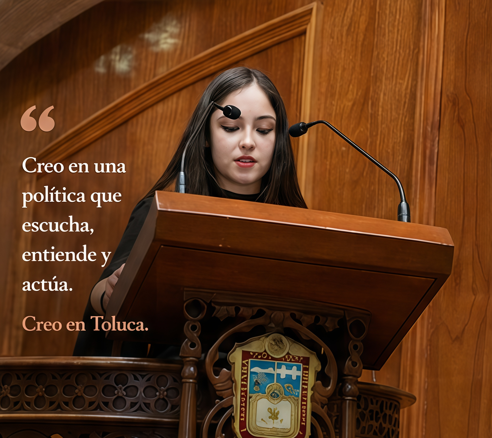

Sobre mí
Creo en una nueva forma de liderazgo que escucha, participa y trabaja por el bienestar de su comunidad.
Como estudiante de Derecho, entiendo la importancia de actuar con responsabilidad, preparación y compromiso para impulsar cambios positivos. Mi interés por la seguridad, la participación juvenil, el bienestar animal y la perspectiva de género ha definido las causas que hoy dan identidad a esta marca personal.
Formación y Compromiso
Preparada hoy, para servir mañana. Mi enfoque une la rigidez técnica de las leyes con la empatía social humana, buscando cambiar las reglas del statu quo para mejorar las condiciones reales de Toluca.
Mis Causas
Seguridad Ciudadana
Promover calles seguras y espacios dignos para vivir en paz y con total tranquilidad.
Juventudes
Impulsar la participación juvenil activa dentro del ecosistema de decisiones colectivas.
Mujeres
Fortalecer espacios violeta, seguros, incluyentes y con plenas oportunidades para todas.
Bienestar Animal
Promover el respeto, protección y cuidado de los animales para una sociedad más compasiva.
Mis Valores
Audacia Joven
Alzar la voz con firmeza frente al esquema tradicional.
Justicia Empática
El derecho visto desde el lado humano de las causas.
Coherencia Colectiva
Respaldo basado en movimientos ciudadanos genuinos.
Responsabilidad Social
Compromiso constante con personas y animales.
Honestidad
Transparencia, congruencia y respeto en cada decisión.
Cercanía Ciudadana
Escucha continua de las verdaderas necesidades locales.
Compromiso
Esfuerzo diario para lograr resultados concretos.
Liderazgo
Inspiración y colaboración para soluciones colectivas.
Galería de Actividades

Escríbeme
¿Tienes alguna propuesta o quieres sumarte a nuestras causas? Deja tus datos aquí.